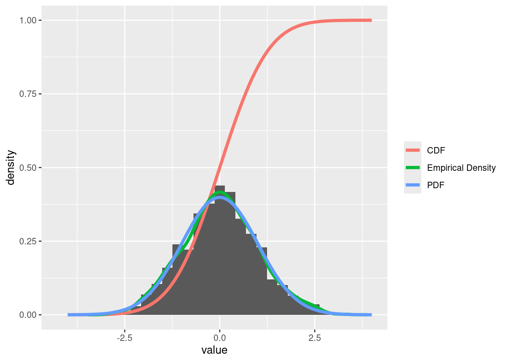

samples <- rnorm(1000, mean, sd)Exploring Probability Distributions in R
Introduction
This document provides an overview of the d-, p-, q-, and r- functions in R, focusing on their roles in understanding probability distributions.
Theoretical Background
The d- Function (Density)
The d- functions, such as dnorm(), calculate the density (or probability mass) at a given point. For continuous distributions, this represents the height of the probability density function (PDF) at a specific value. Use it to understand the likelihood of observing a specific value under a given distribution. For example, dnorm(0, mean = 0, sd = 1) returns the density at x = 0. It helps assess how probable a particular outcome is.
The p- Function (Cumulative Distribution)
The p- functions, like pnorm(), return the cumulative probability up to a given point. This is known as the cumulative distribution function (CDF), which tells us the probability of a random variable being less than or equal to a specific value. Function (Cumulative Probability): calculates the cumulative probability up to a specific point, indicating the probability of a value being less than or equal to that point. For instance, pnorm(1, mean = 0, sd = 1) gives the probability P(X≤1). It’s useful for finding thresholds or quantifying areas under the curve.
The q- Function (Quantile)
The q- functions, such as qnorm(), provide the inverse of the CDF. Given a probability, q- functions return the quantile that corresponds to that probability. q- Function (Quantile): calculates the value corresponding to a given cumulative probability. Use it when you need the value for a specified percentile. For example, qnorm(0.975, mean = 0, sd = 1) returns the 97.5th percentile of the standard normal distribution, useful in setting confidence intervals.
The r- Function (Random Generation)
The r- functions, like rnorm(), are used for generating random samples from a specified distribution. This is essential for simulations and statistical analysis.
Visualizing a Standard Normal Distribution
Let’s create a histogram of random samples drawn from a standard normal distribution and overlay it with the PDF, CDF, and empirical density.
Generating Random Samples
Plotting the Histogram with Overlays
library(ggplot2)
x <- seq(-4, 4, length.out = 100)
df <- data.frame(x = x, value = samples, group = "Measured")
# Sequence for plotting PDF and CDF and empirical density
densi_emp <- density(samples)
# Normalize the measured points
hist_data <- hist(samples, breaks = 30, plot = FALSE)
N <- length(samples)
n_counts_in_bins <- hist_data$counts
bin_widths <- hist_data$breaks[2] - hist_data$breaks[1]
densi <- n_counts_in_bins / (bin_widths * N)
df <- rbind(df,
data.frame(x = x, value = dnorm(x, mean, sd), group = "PDF"),
data.frame(x = x, value = pnorm(x, mean, sd), group = "CDF"),
data.frame(x = densi_emp$x, value = densi_emp$y, group = "Empirical Density")
)
ggplot() +
geom_histogram(
data = df[df$group == "Measured", ],
aes(x = value, y = ..density..)
# This normalizes the histogram: n/(binwidth*N) = density;
# Where N is the total number of observations and
# n is the number of observations in each bin.
# See above for more details
) +
geom_line(
data = df[df$group != "Measured", ],
aes(x = x, y = value, color = group),
size = 1.5
) +
theme(legend.title = element_blank())Warning: Using `size` aesthetic for lines was deprecated in ggplot2 3.4.0.
ℹ Please use `linewidth` instead.Warning: The dot-dot notation (`..density..`) was deprecated in ggplot2 3.4.0.
ℹ Please use `after_stat(density)` instead.`stat_bin()` using `bins = 30`. Pick better value with `binwidth`.